拳王之路
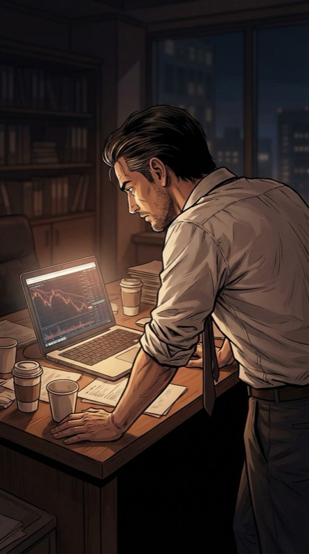
又一个加班到凌晨的夜晚。
我盯着屏幕上的财务报表，那些跳水一样的曲线，像极了我这半年的人生。
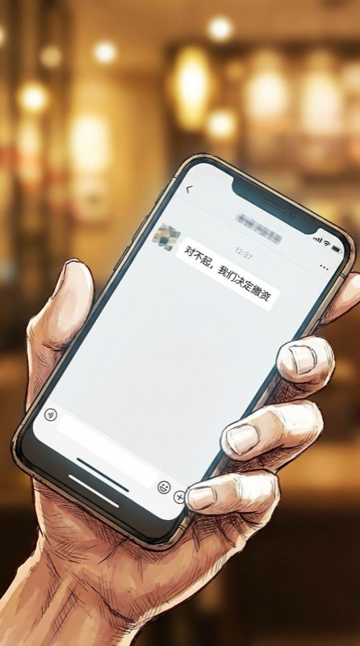
手机震了一下。
「对不起，我们决定撤资。」
六个字，把我最后一根救命稻草烧成了灰。
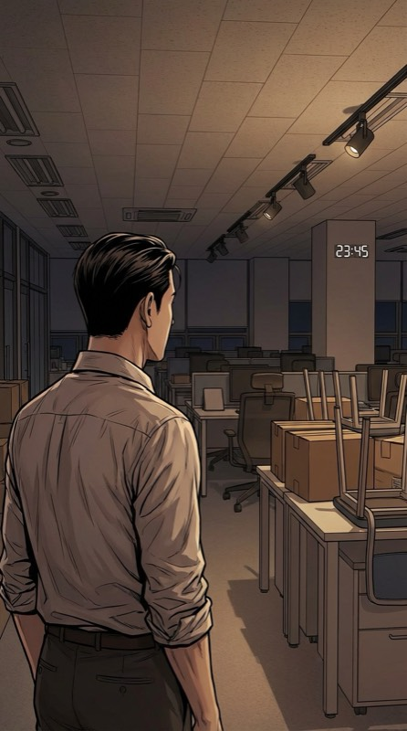
我环顾四周。合伙人的桌子上周就清空了，前天又走了三个工程师。
200平的办公室，现在就剩我一个人，和一堆还没来得及退租的显示器。
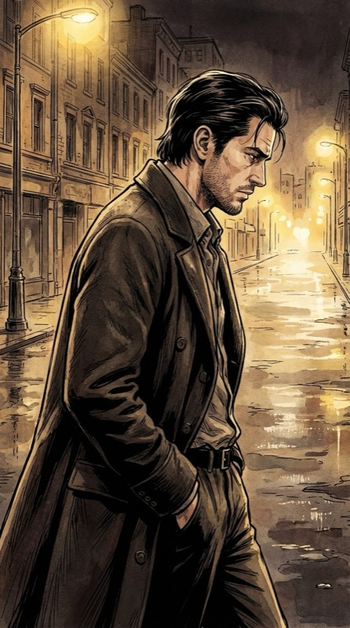
我关了灯，走出写字楼。没叫车，想走走。
深夜的街道很安静，路灯把我的影子拉得老长。我不知道要去哪，只是不想回那个空荡荡的出租屋。
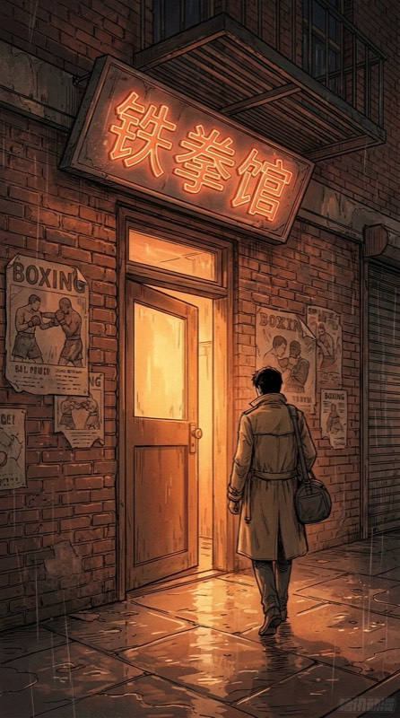
拐过一个巷口，一块霓虹灯牌在黑暗中闪烁——「铁拳馆」。
灯牌的"拳"字已经坏了一半，忽明忽暗。门虚掩着，里面传来沉闷的击打声。
咚……咚……咚……
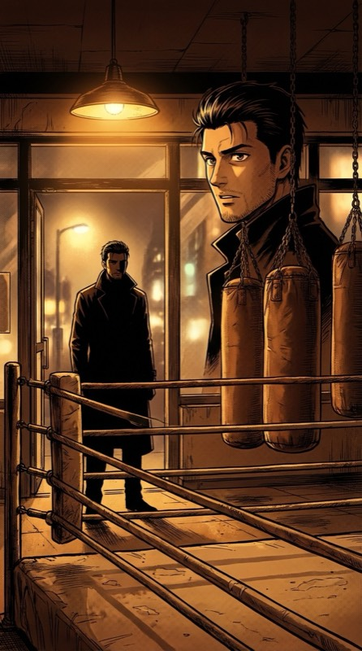
我鬼使神差地推开了门。
一股汗味、皮革味和铁锈味混在一起，扑面而来。说不上好闻，但有一种……真实感。比我那个充满咖啡味和PPT的办公室真实一万倍。
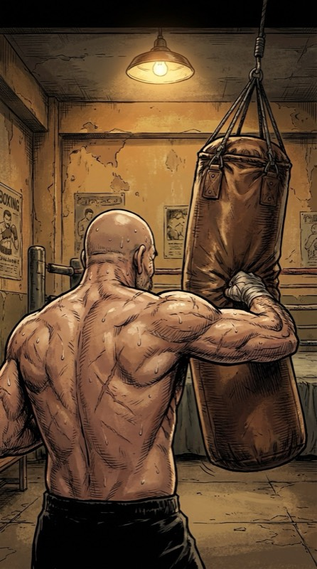
一个光头大汉正在打沙袋。
每一拳下去，整个沙袋都在剧烈摇晃。他的后背全是伤疤，肌肉像钢缆一样绷紧。这种力量感，是我在科技圈见过的所有「强者」都不具备的。
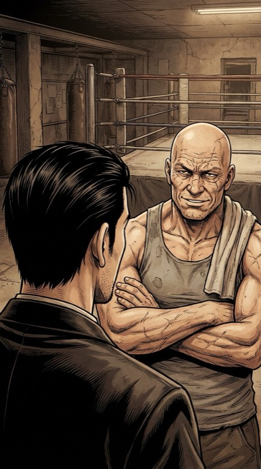
他回过头，扫了我一眼。鼻子歪的，像被打断过好几次。
「想打人？」他把毛巾往肩上一搭，「先学挨打。」
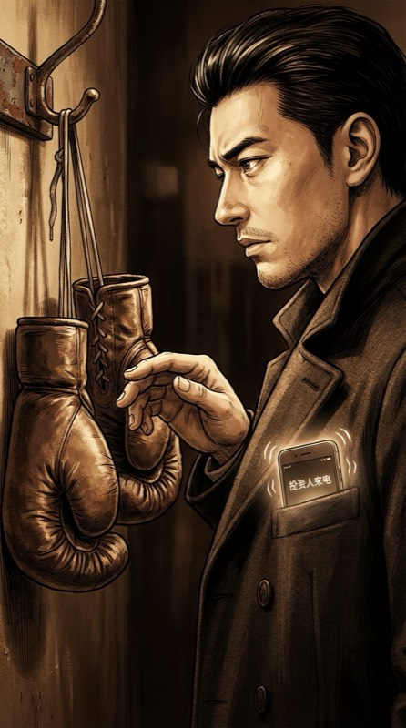
口袋里的手机又震了。屏幕亮起「投资人来电」——这是最后通牒的电话。
我的手在手机和墙上挂着的一副旧拳套之间犹豫。
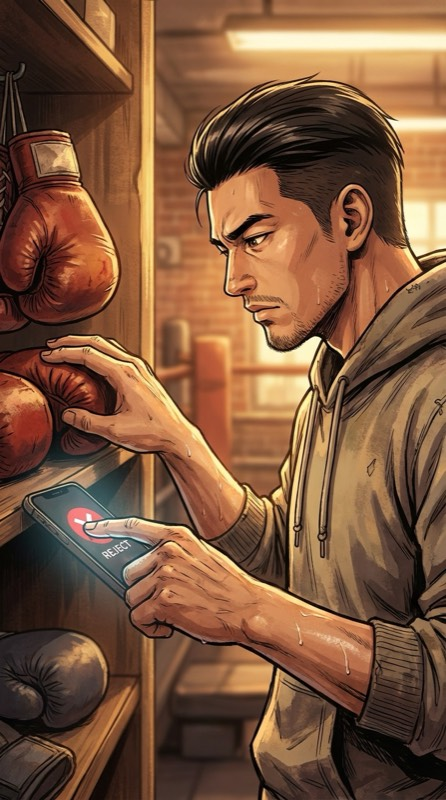
我按掉了电话，伸手摘下了那副拳套。
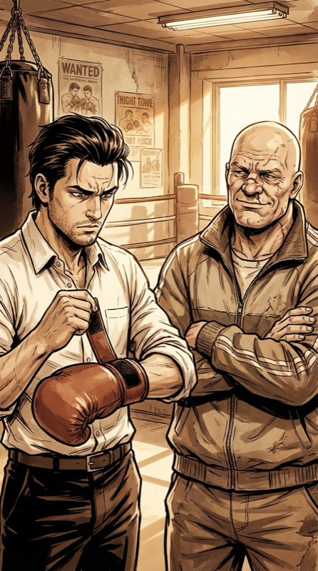
拳套比想象中难戴多了。我跟魔术贴较劲了两分钟，还是没绑好。
光头大汉——后来我知道他叫老铁——在旁边看着，那表情像在看一只刚学走路的企鹅。
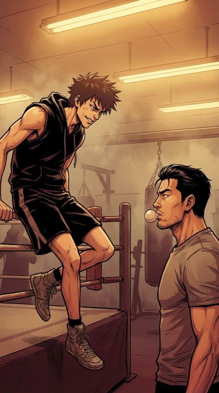
一个瘦高个从擂台上跳下来，刺猬头，嘴里嚼着口香糖。
他叫小刀，十九岁，是这拳击馆唯一的年轻拳手。
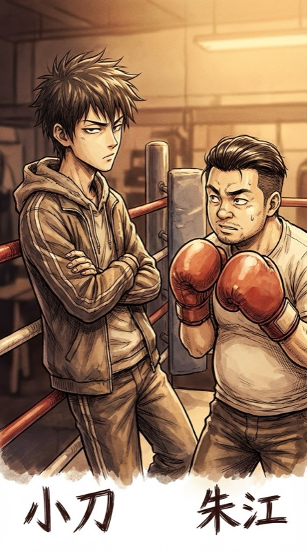
小刀上下打量了我一眼，吹了个泡泡。
「叔，你这是来健身的还是来拍写真的？那衬衫可贵了吧。」
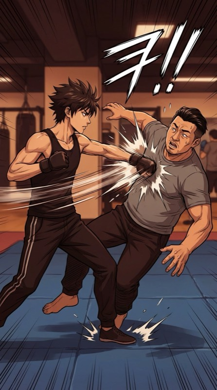
老铁让小刀跟我「切磋」一下。
小刀的拳头像一道闪电。我甚至没看清他出拳，胸口就挨了结结实实一下。整个人往后踉跄了三步。
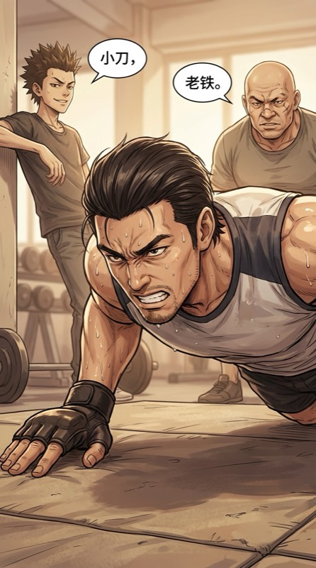
第二拳打在肩膀上，第三拳直接把我放倒。
地垫的味道很冲。但我撑着地，膝盖一顶，站了起来。
不知道为什么，被打倒反而让我清醒了。那些投资人、财务报表、客户催款——全从脑子里消失了。
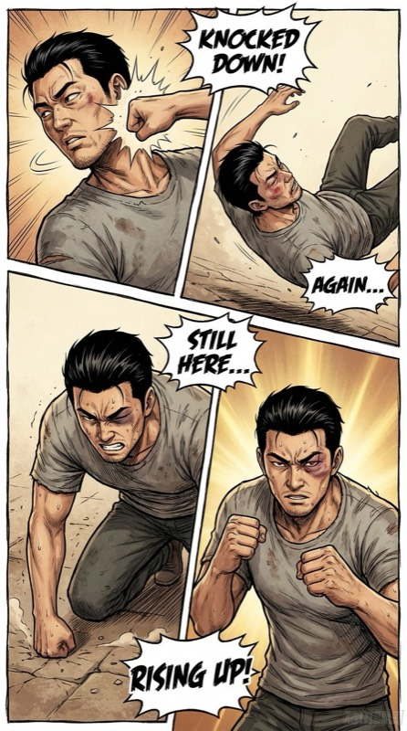
那天晚上我被小刀打倒了十一次。
每一次倒下，我都爬起来。
小刀从一开始的不屑，打到后面，嘴里的口香糖都忘了嚼。
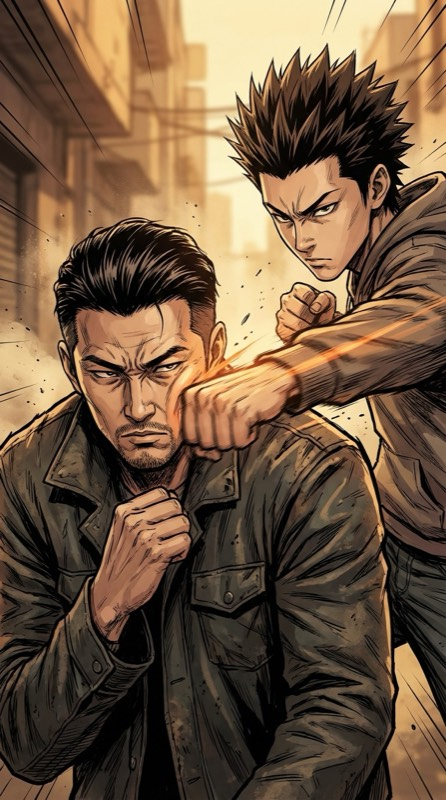
第十二次，小刀的拳头擦着我的脸飞过去了。
我自己都没反应过来——身体先于大脑做出了闪避动作。拳风从耳边呼啸而过，近得能感受到指关节的温度。
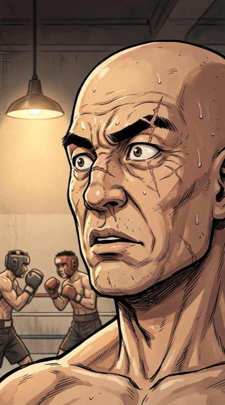
老铁的表情变了。
从「看热闹」变成了「认真审视」。他的眉毛挑了起来，伤疤在灯光下拧成一团。
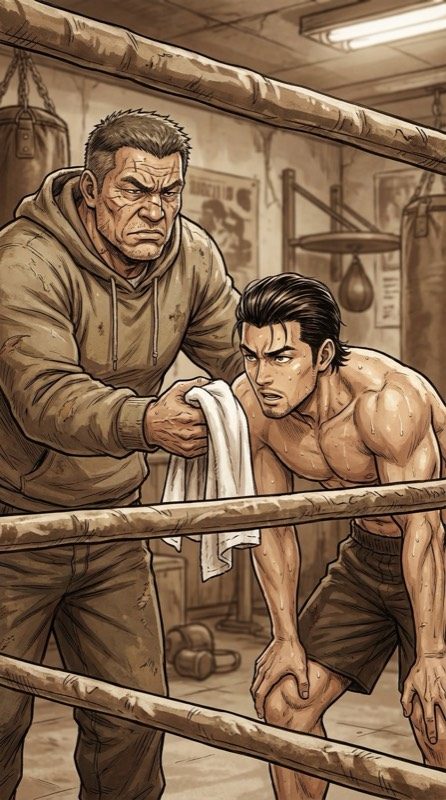
老铁走过来，把毛巾扔给我。
「你眼睛跟得上，但身体跟不上。」
他盯着我看了几秒，像在看一块还没雕刻的璞玉。
「你以前练过？」
「没有。我写代码的。」
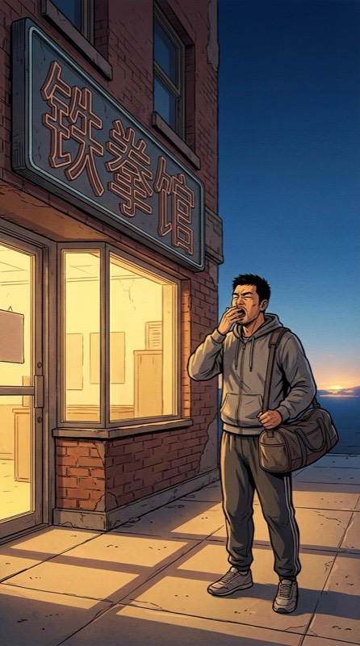
「我收你。」老铁说，「但我的规矩——每天早上五点，准时到。一天不来，永远别来。」
每天凌晨五点。而我白天还要想办法救公司。
第二天凌晨四点五十，我就站在了铁拳馆门口。天还是黑的。
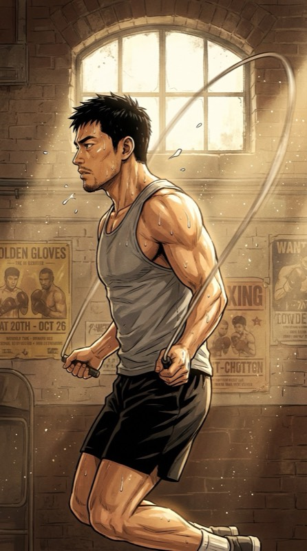
跳绳。老铁说这是拳手的基本功。
前三天我连一百个都跳不完，绳子总是绊脚。一周后，我能连续跳五百个不停。每一下跳跃都像是在跟地心引力较劲。
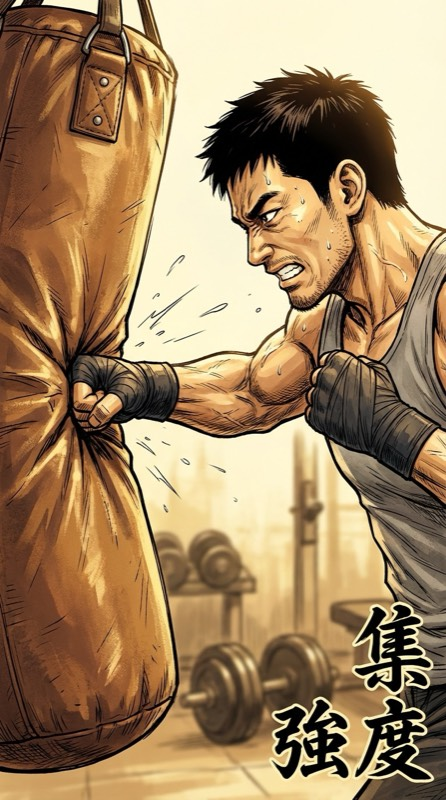
打沙袋。拳头跟皮革撞击的声音，比任何音乐都好听。
老铁让我每天打一千拳。打到后来，指关节全是血，缠了绷带继续打。
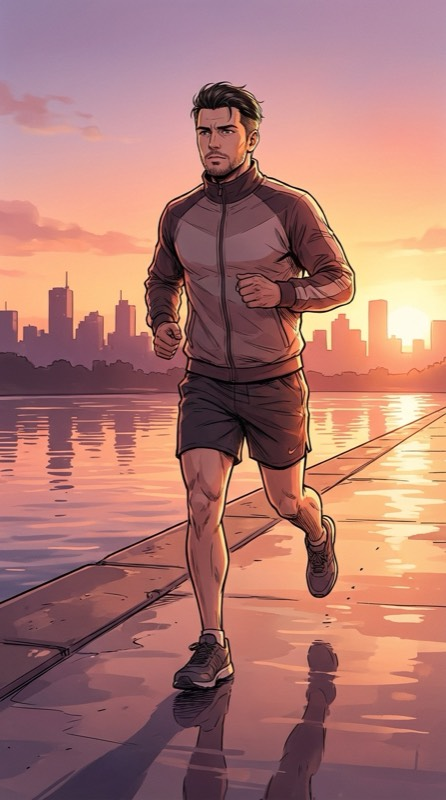
五点半的江边，只有我和清洁工。
城市的天际线在晨光中慢慢亮起来。我跑在空旷的步道上，呼吸均匀，心跳有力。这种感觉，比任何一次融资成功都踏实。
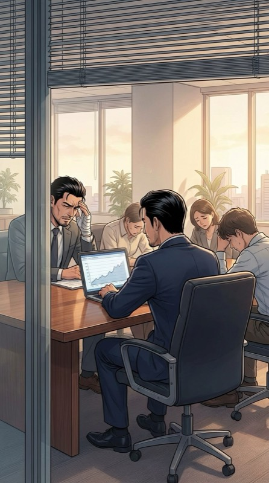
白天，我还是那个快要倒闭的CEO。
开会的时候，我发现自己缠着绷带的手指在桌子底下攥成了拳头。同事以为我在焦虑，其实我在想昨天老铁教的上勾拳发力技巧。
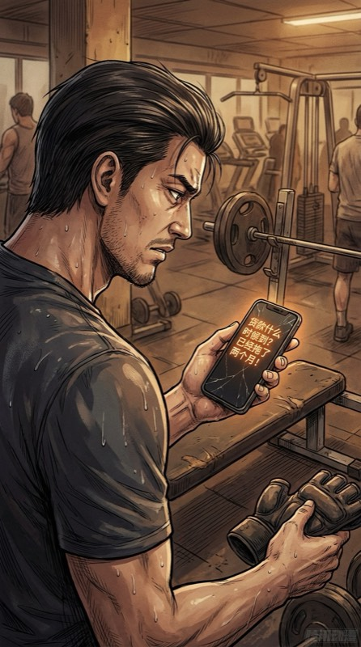
训练间隙看手机，催款消息炸了。
「货款什么时候到？已经拖了两个月！」
我把手机塞回口袋，重新戴上拳套。打一拳，就当打掉一个催款电话。
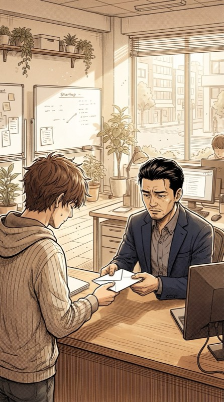
又走了一个。小李把辞职信放在我桌上，不敢看我的眼睛。
「江哥，对不起。房贷……」
「走吧。」我签了字，笑了笑，「别道歉，是我对不起你们。」
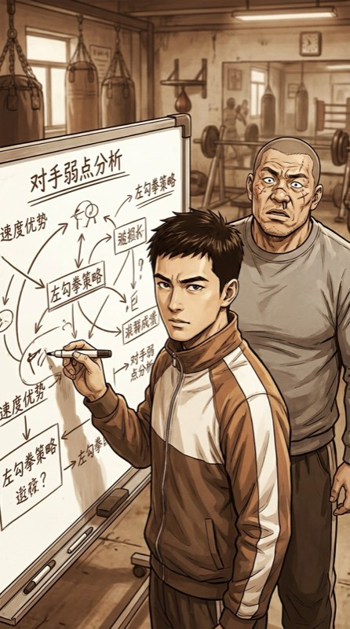
我从公司搬了块白板到拳击馆，开始用数据分析的方式研究拳击。
对手的出拳频率、习惯性组合拳、防守薄弱区域——在我眼里，这些都是「用户行为数据」。
白板上写满了「对手弱点分析」「出拳转化率」「防守覆盖率」。
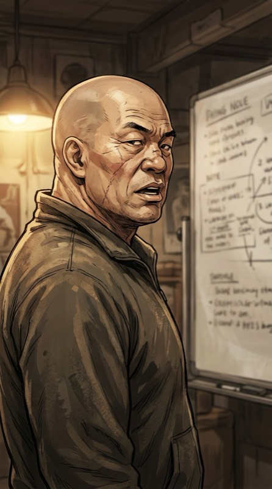
老铁看了白板三十秒，一句话差点没把我噎死：
「我见过来减压的，没见过把自己打成沙袋的。你现在又想把擂台变成会议室？」
小刀在旁边笑得直打滚：「叔，你这是要给对手做竞品分析？」
我理直气壮：「这一拳的ROI很高，你们不懂。」
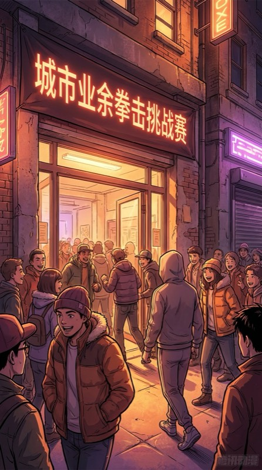
三个月后，老铁给我报了一场业余赛。
「城市业余拳击挑战赛」，说白了就是一帮菜鸟互殴的周末节目。但对我来说，这是我人生第一次站上擂台。
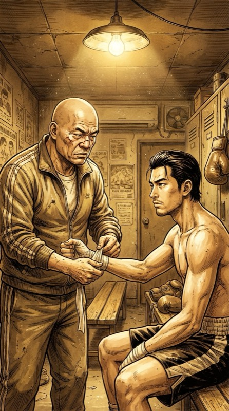
后台，老铁帮我缠手带。一圈一圈，缠得很紧，但很稳。
他没说「加油」，也没说「别紧张」。只说了一句：
「记住，拳头是用来解决问题的，不是用来证明自己的。」
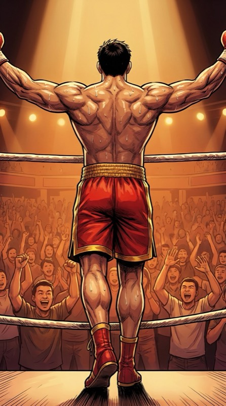
我的对手走上来了。
一百九十公分，浑身肌肉，胳膊比我腰还粗。健身房里练出来的那种——好看，也吓人。
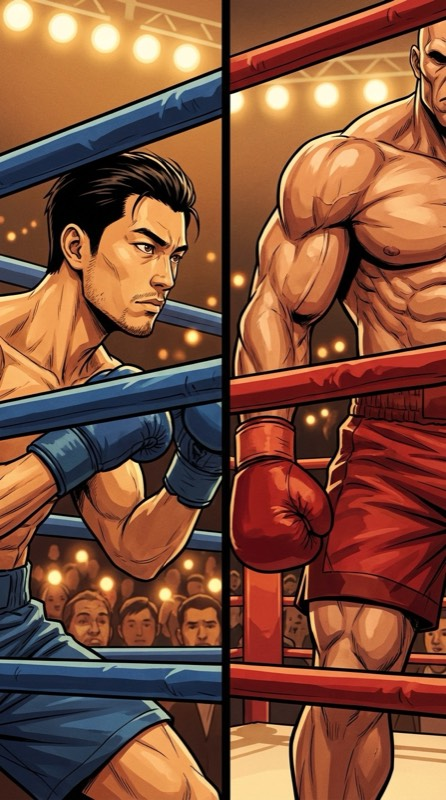
蓝角，我。红角，他。
体型差距大到观众席有人笑出了声。我听见有人小声说「这不是送的吗」。
说实话？我也这么觉得。
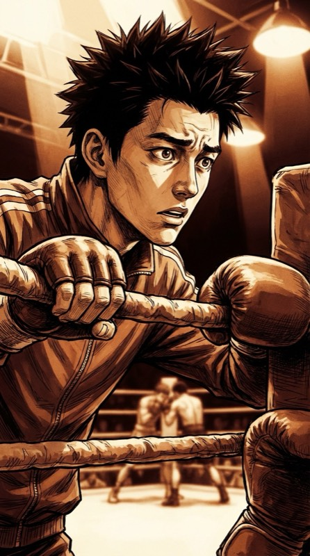
小刀攥着擂台边的绳子，指节发白。
三个月前他还看不起我，说「叔你这水平要不还是回去写代码吧」。现在他比我还紧张。
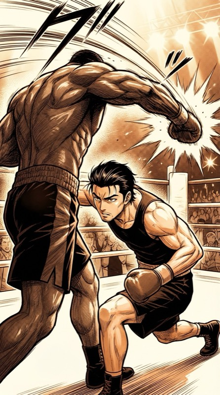
铃响。肌肉猛男冲上来就是一记右摆拳，带着开山裂石的架势。
我蹲下去了。
拳风从头顶掠过，我闻到了他手套上的汗味。我的身体——那个被老铁训练了三个月的身体——终于跟上了眼睛。
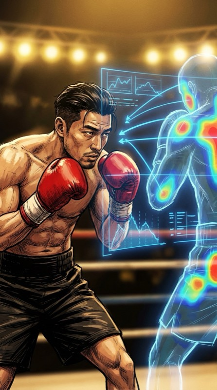
奇怪的事情发生了。
他的每一拳，在我眼里都变成了数据——轨迹、角度、速度、空档。就像看代码一样，我能「读」出他的出拳模式。
老铁说得没错：我的眼睛，天生就是为了这个。
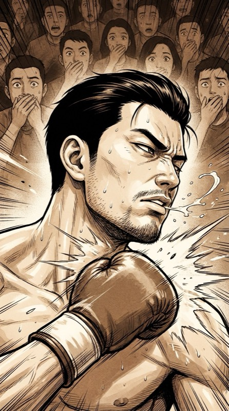
但第二回合，我大意了。
一记右勾拳，结结实实地砸在我下巴上。世界旋转了九十度。
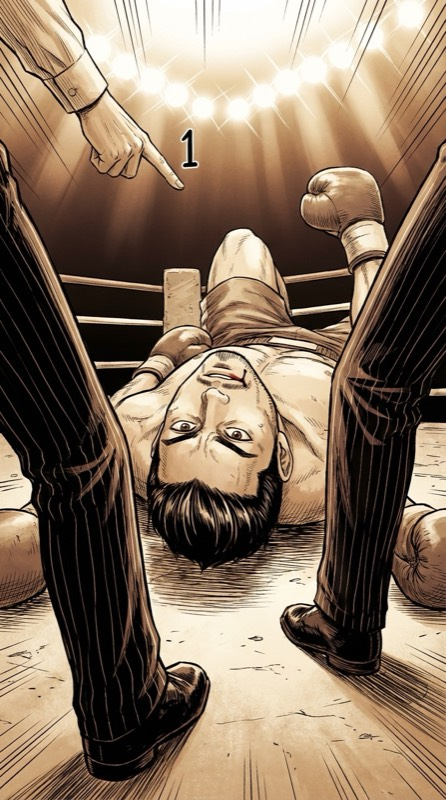
我倒在擂台上，看见头顶的灯——白花花的，刺眼。
裁判开始数数了。
嘴角有铁锈味。血。
身体在说：够了。别起来了。你不是拳手。你是个程序员。
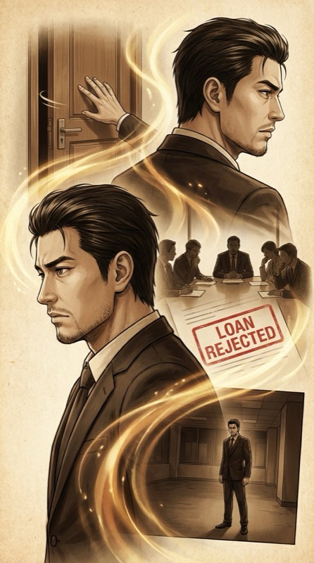
脑海里闪过一百个画面——
第一次创业被投资人拒绝。第二次。第三次。第二十次。第一百次。
每一扇关上的门，每一通拒绝的电话，每一个离开的合伙人。
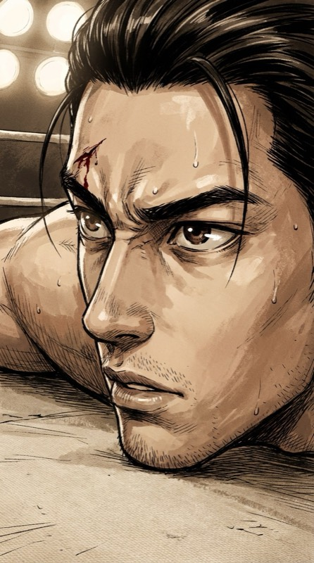
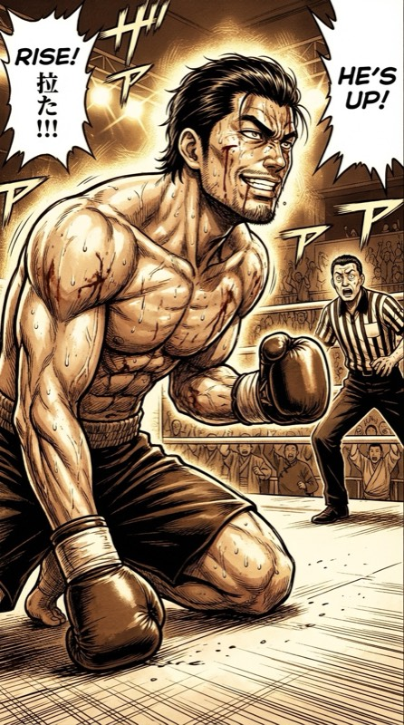
「七……」裁判还在数。
我的膝盖顶在地上。手撑着绳子。
站起来了。
嘴角的血还在流，但我笑了。对面那个肌肉猛男的眼睛里，第一次出现了不确定。
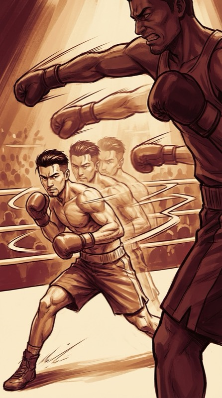
站起来之后，一切都变了。
不再是蛮干。我开始「读」他。左拳虚晃——跟。右拳直击——闪。上勾拳——后仰。每一次闪避都精确到厘米。
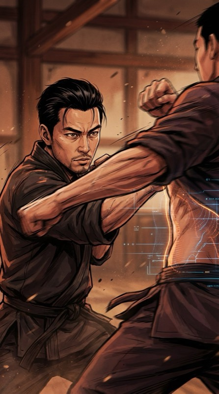
找到了。
他每次出右摆拳后，左肋有0.3秒的空档。零点三秒。对普通人来说是一眨眼，对我来说——够了。
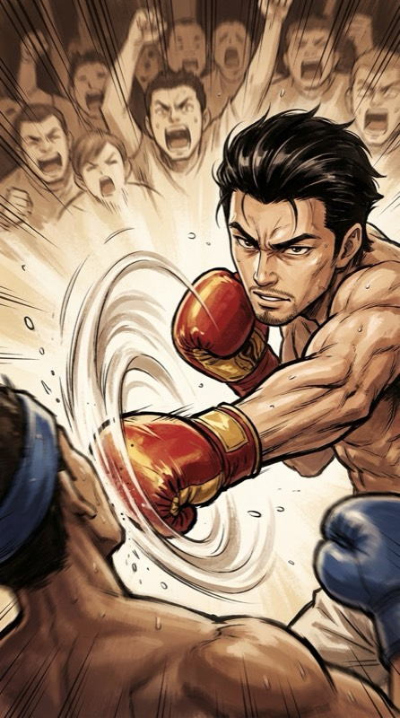
他的右摆拳又来了。我侧身让过——
左勾拳。发力从脚底传到腰，从腰传到肩，从肩传到拳头。
老铁教的每一个动作，三个月的每一滴汗，在这一拳里全部兑现。
精准命中。
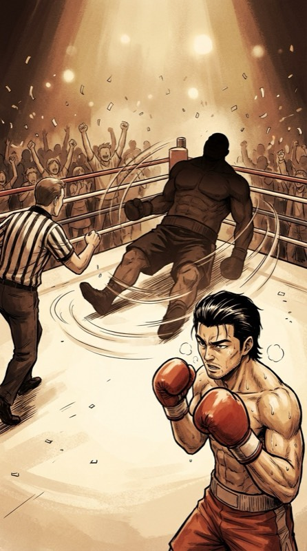
肌肉猛男倒了。
全场安静了一秒——然后炸了。
我站在擂台中央，浑身是汗是血，喘得像条狗。但心里从来没有这么清楚过：我还活着。公司也会活着。
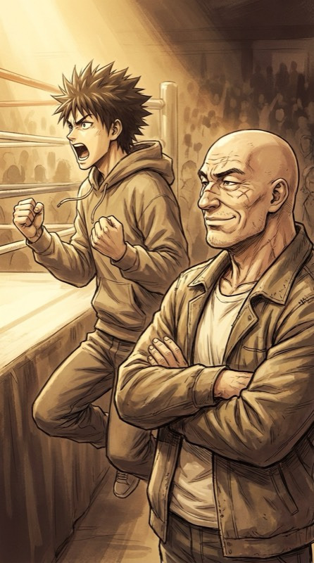
小刀在台下蹦得比我赢了还高兴，差点翻过围栏。
老铁没蹦。他抱着胳膊，嘴角歪了一下——对他来说，这已经是最高规格的笑容了。
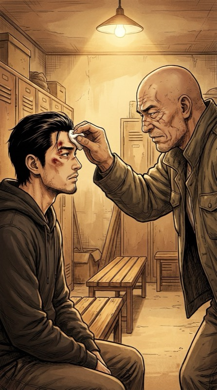
后台，老铁帮我处理伤口。棉签蘸碘伏，疼得我直抽气。
「还行。」他说。这是我听过他说的最好听的两个字。
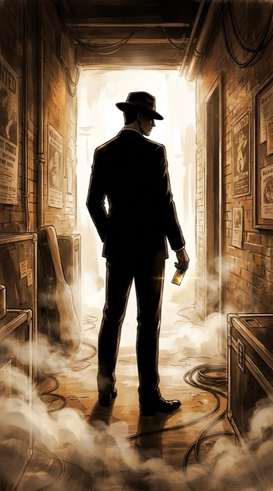
门外传来皮鞋踩地板的声音。
走廊尽头，一个穿黑色西装的男人站在那里。看不清脸。他手里夹着一张名片，像钓鱼一样，慢慢伸向我。
「你的比赛，很有意思。」声音很平，但有种让人说不出的压迫感。
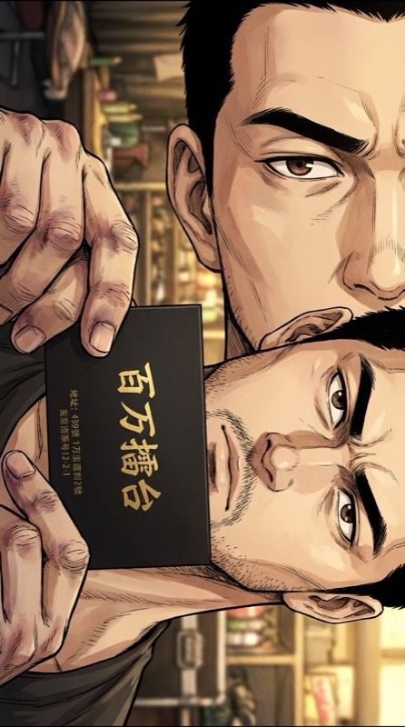
名片是黑色的，烫金字——「百万擂台」。下面是一个地址。
百万。我的公司还差两百万就要关门。这个数字像一块磁铁。
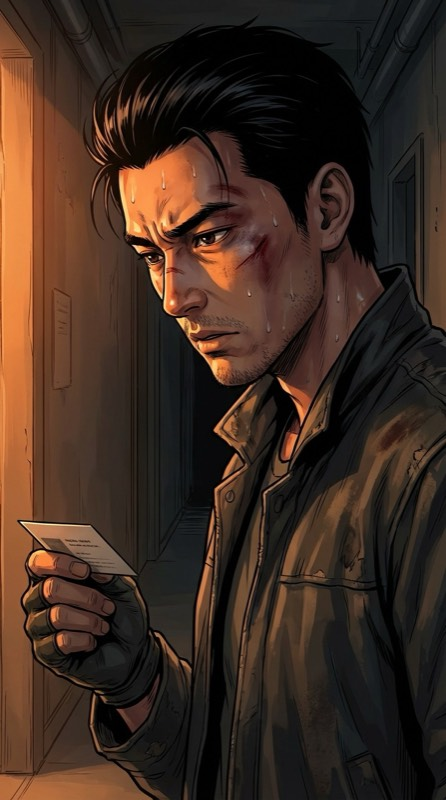
我把名片揣进口袋。菩萨心肠霹雳手段——我会去看看，但我朱江做事，有底线。
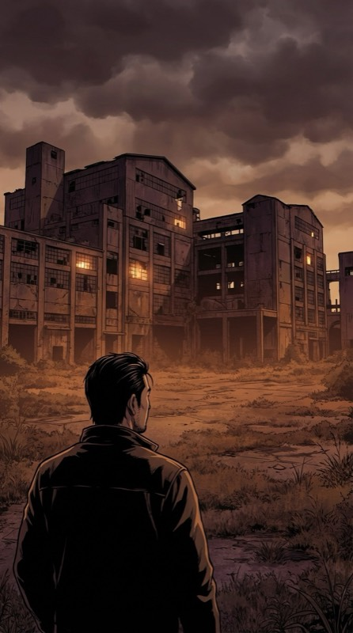
名片上的地址，是城郊一栋废弃工厂。
我站在远处看着那栋建筑。黑暗中，几扇窗户透着忽明忽暗的灯光，像是一头沉睡巨兽的眼睛。
身后传来老铁的声音，低沉得像雷：
「那个地方……别去。」